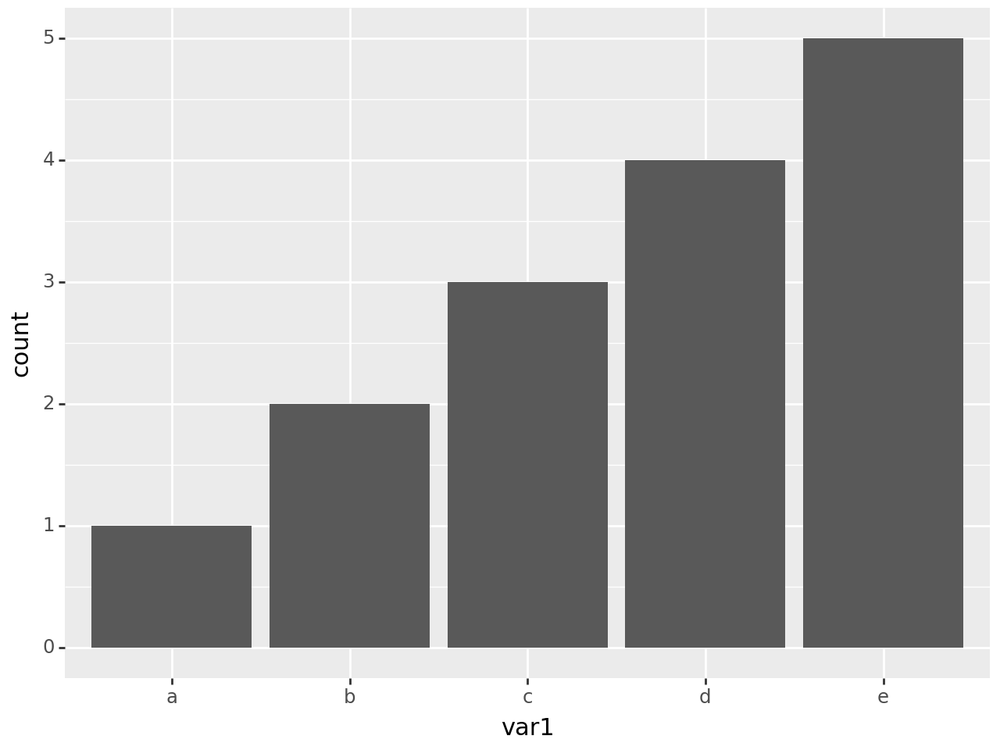
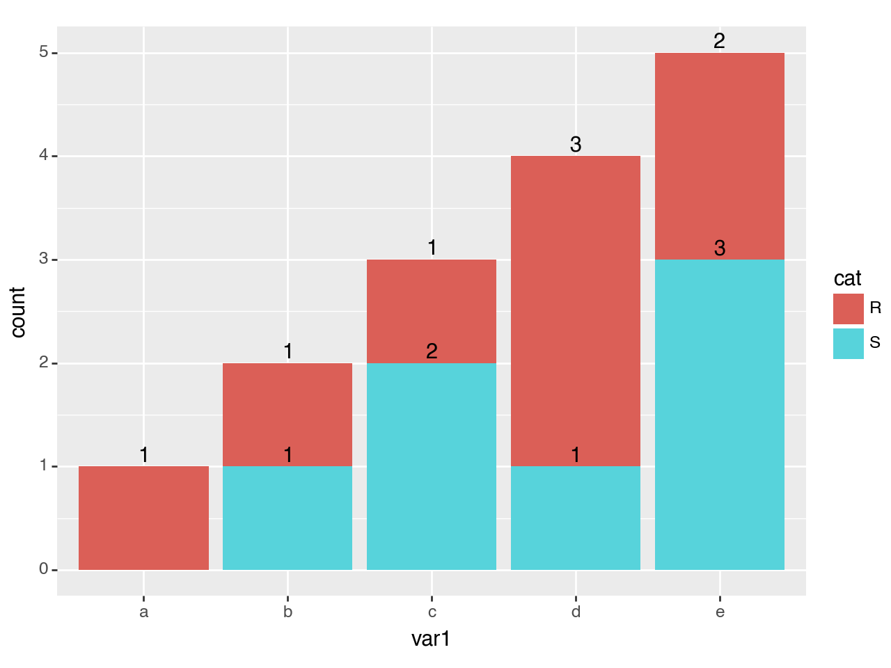
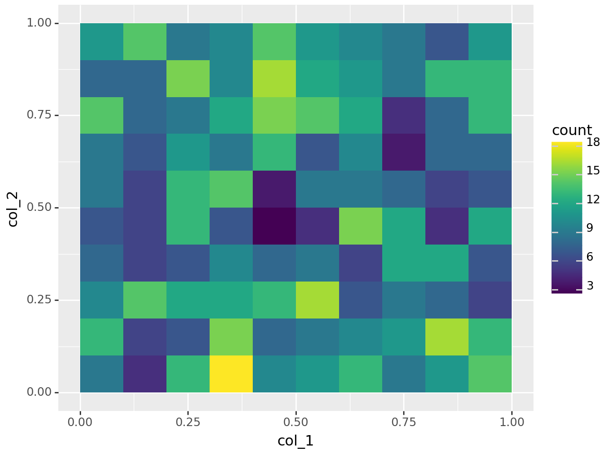

%load_ext autoreload
%autoreload 2
%aimport plotnine
import pandas as pd
import numpy as np
from plotnine import (
ggplot,
aes,
after_stat,
stage,
geom_bar,
geom_text,
geom_bin_2d,
stat_bin_2d,
)
stage(start=None, after_stat=None, after_scale=None)Stage allows you evaluating mapping at more than one stage
You can evaluate an expression of a variable in a dataframe, and later evaluate an expression that modifies the values mapped to the scale.
Parameters
start : str | array_like | scalar = None-
Aesthetic expression using primary variables from the layer data.
after_stat : str = None-
Aesthetic expression using variables calculated by the stat.
after_scale : str = None-
Aesthetic expression using aesthetics of the layer.
Examples
stage
df = pd.DataFrame({
'var1': list('abbcccddddeeeee'),
'cat': list('RSRSRSRRRSRSSRS')
})
(ggplot(df, aes('var1'))
+ geom_bar()
)
Add the corresponding count on top of each bar.
(ggplot(df, aes('var1'))
+ geom_bar()
+ geom_text(aes(label=after_stat('count')), stat='count')
)Adjust the y position so that the counts do not overlap the bars.
(ggplot(df, aes('var1'))
+ geom_bar()
+ geom_text(aes(label=after_stat('count'), y=stage(after_stat='count', after_scale='y+.1')), stat='count')
)
Note that this will work even nicely for stacked bars where adjustig the position with nudge_y=0.1 would not.
(ggplot(df, aes('var1', fill='cat'))
+ geom_bar()
+ geom_text(aes(label=after_stat('count'), y=stage(after_stat='count', after_scale='y+.1')), stat='count', position='stack')
)
Create a binned 2d plot with counts
np.random.seed(123)
df = pd.DataFrame({
'col_1': np.random.rand(1000),
'col_2': np.random.rand(1000)
})(ggplot(df, aes(x='col_1', y='col_2'))
+ geom_bin_2d(position='identity', binwidth=0.1)
)
Add counts to the bins. stat_bin_2d bins are specified using retangular minimum and maximum end-points for dimension; we use these values to compute the mid-points at which to place the counts.
First x and y aesthetics are mapped to col_1 and col_2 variables, then after the statistic consumes them and creates xmin, xmax, ymin & ymax values for each bin along with associated count. After the statistic computation the x and y aesthetics do not exist, but we create meaningful values using the minimum and maximum end-points.
Note that the binning parameters for the geom and stat combination must be the same. In this case it is the binwidth.
(ggplot(df, aes(x='col_1', y='col_2'))
+ geom_bin_2d(position='identity', binwidth=0.1)
+ stat_bin_2d(
aes(
x=stage(start='col_1', after_stat='(xmin+xmax)/2'),
y=stage(start='col_2', after_stat='(ymin+ymax)/2'),
label=after_stat('count')
),
binwidth=0.1,
geom='text',
format_string='{:.0f}',
size=10
)
)